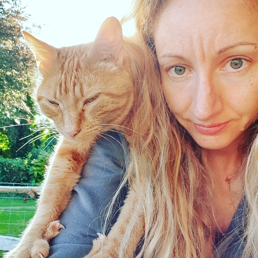

My name is Felicity, but I'm often known as Flip. I'm an aspiring
Front End / Web Developer from Hampshire, UK. I have a Masters
degree in Chemistry and 8 years' experience developing new products
in the polyester and security industries. As rewarding and interesting
as my early career has been, when I moved south to be with my
partner I ended up stuck in a rut with my career and decided
something had to change. That's when I decided to learn to code.
Having researched self-learning and bootcamp options, in August 2020
I took my first SheCodes course, the 'Introduction to Coding' and
from there I was hooked. I went on to complete the SheCodes Plus
course and the SheCodes React course.